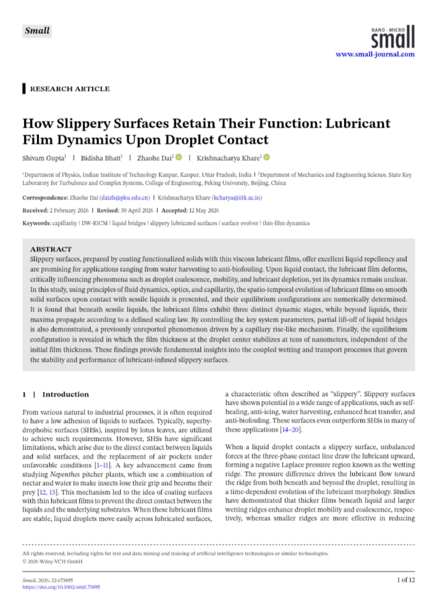
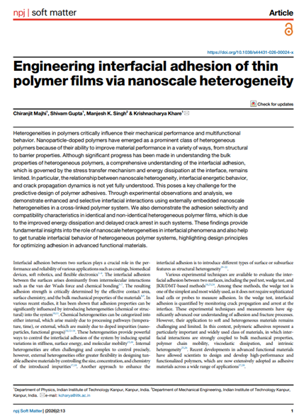
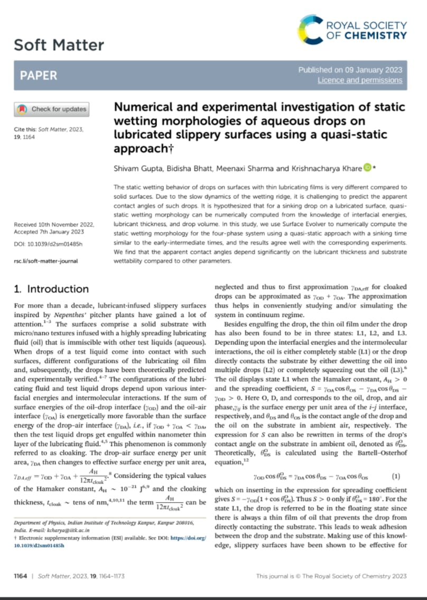
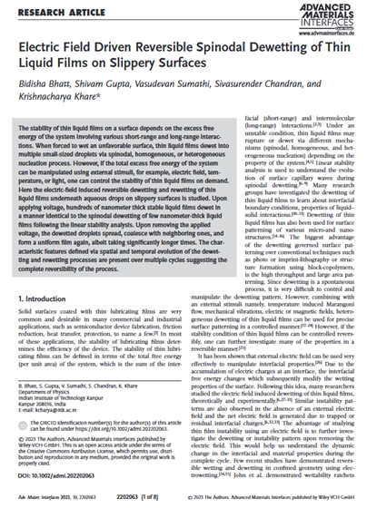
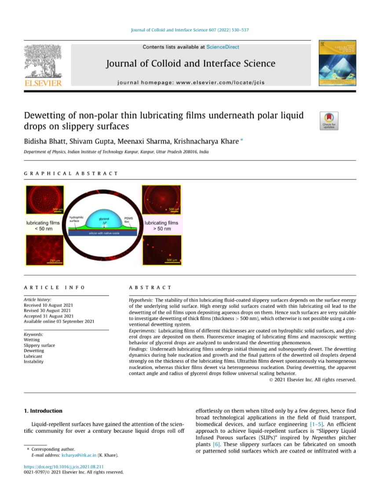
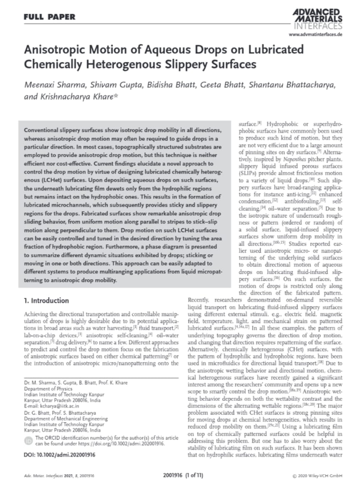
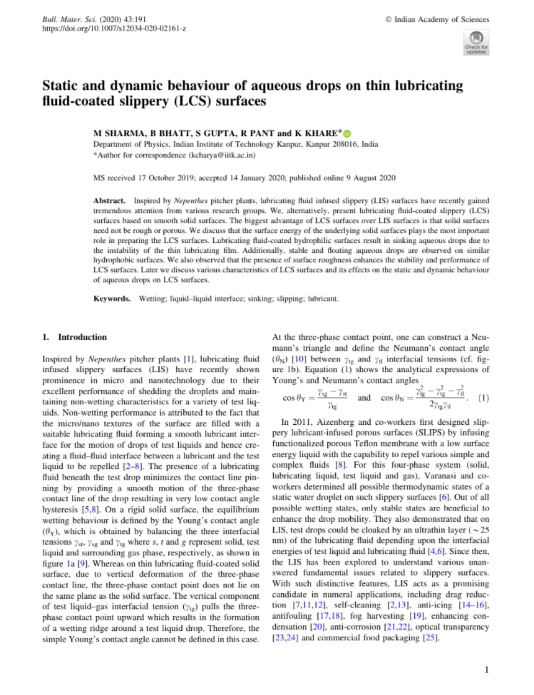

I am Dr. Shivam Gupta, currently working as a Postdoctoral Researcher in the Daniel Unit at the Okinawa Institute of Science and Technology (OIST), Japan, with Prof. Dan Daniel. I recently completed my PhD in the Department of Physics at IIT Kanpur, working under Prof. Krishnacharya in the Soft Matter Physics Laboratory.
My thesis, "Liquids on Lubricated Surfaces: Statics and Dynamics," examines what happens when a drop of one liquid lands on a solid surface pre-coated with a thin lubricating film — systems inspired by the slippery, insect-trapping surface of the Nepenthes pitcher plant.
Education
& Beyond
& Beyond
2011 — 2012
Class X
G.A.V Public School, Kangra, H.P.
2013 — 2014
Class XII
G.A.V Public School, Kangra, H.P.
2014 — 2017
BSc in Physics
Shivaji College, Delhi University
2017 — 2019
MSc in Physics
IIT Kanpur
2019 — 2026
PhD in Physics
IIT Kanpur
2026 — Present
Postdoctoral Researcher
OIST, Japan
Publications

How Slippery Surfaces Retain Their Function: Lubricant Film Dynamics Upon Droplet Contact

Engineering interfacial adhesion of thin polymer films via nanoscale heterogeneity

Numerical and Experimental Investigation of Static Wetting Morphologies of Aqueous Drops on Lubricated Slippery Surfaces Using a Quasi-Static Approach

Electric Field Driven Reversible Spinodal Dewetting of Thin Liquid Films on Slippery Surfaces

Dewetting of Non-Polar Thin Lubricating Films Underneath Polar Liquid Drops on Slippery Surfaces

Anisotropic Motion of Aqueous Drops on Lubricated Chemically Heterogeneous Slippery Surfaces

Static and Dynamic Behaviour of Aqueous Drops on Thin Lubricating Fluid-Coated Slippery (LCS) Surfaces
Work Experience
Teaching Assistant (TA): Confocal Microscopy
TA: English Language Course
Online IIT JAM Physics Tutor
Online IIT JAM Physics Tutor
LaTeX Workshop Instructor (Chemical Eng.)
LaTeX Workshop Instructor (Mechanical Eng.)
TA: Experimental Physics Lab (UG/PG)
TA: Intro to Electrodynamics (UG)
TA: Experimental Physics Lab (UG/PG)
TA: Experimental Physics Lab (UG)
🎤 Conferences & Symposiums Attended
Liquid Matter Conference
Research Scholar Day
Research Scholar Day
Complex Fluids Symposium (CompFlu)
Deutsche Physikalische Gesellschaft (DPG-2022)
Macromolecular Chemistry: The Second Century by ACS
🏆 Awards & Achievements
Fellowship for Academic and Research Excellence (FARE)
Prime Minister's Research Fellowship (PMRF)
Senior Research Fellowship
Junior Research Fellowship
JOINT CSIR-UGC TEST FOR J.R.F (PHYSICS)
IIT-JAM (PHYSICS)
Science Exhibition, First Position, INVENIO
General Knowledge MCQ competition, Second position
Inter-school Mathematics Olympiad, Third position